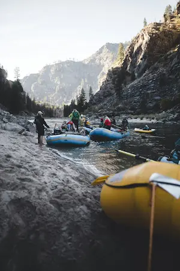
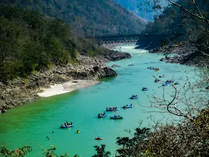

With incredible rivers, amazing views and great canyons there is Colorado! A two day trip, with the possibility of camping, Colorado is the perfect place. The water is calm and the weather sunny, the best place for an adventurous family.
The biggest forest of the world, with the longest river and a great diversity of animals, this is Amazon Forest! A four day trip full of emotion! Starting at Manaus's City and ending at Rio Branco's city. Only the ones that love true adventures will go!
Nicaragua is the best place for the ones that want to get impressed! A five day trip with rough waters! The views would make anyone desire to raft!
Available Trips
 ALASKA 2 day trip Cold weather Mountain view
AMAZON FOREST 4 day trip Hot weather Great biodiversity
COLORADO 2 day trip Average weather Calm water
MEXICO 3 day trip Hot weather Clear waters
NICARAGUA 3 day trip Avarage weather Incredible views